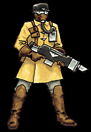

Imperial Forces |
Force Disposition Introduction |
Ork Forces |
|
 The Steel Legion fight throughout Armageddon in numerous battlezones, mustering their armoured might in great lines of spitting firepower. Most of the troopers are consigned to defend the hives where they grew up and trained, not only does this give the troopers the advantage of knowing the battlefield exceptionally well but also increases their dedication and perserverance. As a result, many companies are currently assigned to Tempestora, as well as Hive Infernus and Hive Archeron. The Steel Legion have suffered horrendous casualties in defence of their homeworld, but under the leadership of Commissar Yarrick himself, they will fight to the last man.
Tithed regiments from Armageddon have served in wars all over the Imperium. This is an example of how the presence of a single Armageddon Steel Legion made a significant difference to the outcome of a war.
In M36.776 the 16th Armageddon Steel Legion was on the planet of Cassell. It had been stationed there following its participation as part of General Belov's 3rd Imperial Guard Army in the Lortharn Campaign, where it had served with distinction.
|
| ||||||||||||||||||||||||||||||||||||||||||||||||||
|
Cassell is an agri-world, which was ruled at this time by the followers of a local Imperial cult known as the Way of the Emperor's Flesh. The leader of the cult, the Supreme Pontiff Skalin, had long been noted for his eccentric views, but had to this point been a loyal and reliable governor of Cassell for the Imperium. Worrying reports, however, had reached the ear of Colonel Kleist, commander of the 16th Steel Legion. These reports concerned rumours that the Supreme Pontiff had been becoming increasingly outspoken in his belief that the cult over which he ruled was the one true cult of the Emperor, and that the rest of the Imperium had to be made to acknowledge this fact. Loath to act without hard evidence, Kleist put the 16th to combat readiness and requested permission from the administratum to investigate the rumours he had received. Before such permission could be received, however, the Pontiff called upon the people of Cassell to join with him in a crusade to bring the Way of the Emperor's Flesh to all of the peoples of the Imperium. Their righteous armies would overthrow the High Lords of Terra and lead the Imperium back into the light... all under the beneficent rule of the Supreme Pontiff, of course. Kleist acted immediately. Fortunately for him, Cassell had only one major city, the unimaginatively named Port Cassell. The bulk of the population lived in scattered farming communities spread all over the planet and Kleist knew that if he acted quickly he could quell this rebellion before it had a chance to get started. Less than an hour after the Pontiff's announcement, Chimera armoured vehicles moved out from the 16th Steel Legion's containment just outside Port Cassell. The column, under Kleist's personal command, approached Port Cassell's main gate, where it was immediately obvious that the Pontiff's followers were not at all prepared for an armoured assault. The gate was lightly held by members of the Pontiff's personal guard, whose lasguns and heavy stubbers were of little use against the armour plate of the Steel Legion Chimeras. Ignoring the desultory fire from the defenders, Kleist ordered a Chimera to smash down the city gate, and then he and the rest of the column surged into the town. Leaving one platoon to secure the gate, Kleist split the remainder of his force into two columns. The smaller of these, consisting of the 3rd Company, roared off towards Port Cassell's space port and main communications centre. By now word had spread that the city was under attack, and the 3rd Company met more determined opposition than they had at Cassell's main gate. Nonetheless, the defenders still had little in the way of heavy weapons with which to oppose the Steel Legion's Chimeras, and, after a short but brutal firefight, the communications centre was captured. Meanwhile Kleist and the rest of his flying column headed towards the Divine Palace of the Supreme Pontiff. The palace was defended by the bulk of the Pontiff's bodyguard, along with the bodyguard's only armoured vehicle, an ageing Leman Russ gifted to Cassell many centuries earlier. The Leman Russ's crew were desperately attempting to make the tanks aged engine start up when Kleist arrived at the palace. Leading from the front, Kleist's Chimera charged at the Leman Russ, shots from its multi-laser bouncing harmlessly off the tank's thick frontal armour. However, the fire distracted the tank’s crew, giving Kleist long enough to get behind the armoured behemoth. As the Chimera braked to a halt, the lascannon team carried in the passenger compartment threw open the top hatch and let fly at the Leman Russ's thinner rear armour. The lascannon shot carved through the rear of the tank, hitting its ammunition. With a huge explosion, the Leman Russ exploded. Thrown into confusion by the destruction of the tank, the remainder of the Pontiff's guard offered little resistance to the troops in Kleist's flying column. In less than two hours the Pontiff's palace was firmly in the hands of the 16th Steel Legion, and the Pontiff himself had been captured as he attempted to escape in a small skiff from the Palace wharf. The news was broadcast from the captured communications centre and, less than six hours after it had started, the Cassell Rebellion was over. | |||||||||||||||||||||||||||||||||||||||||||||||||||